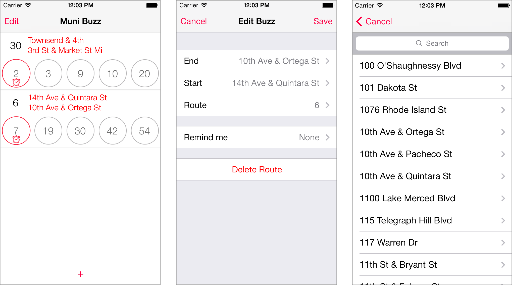

<!-- @include _header -->
<section class="content">
  <section class="articles">
    My first ios app is attributed to a boy.
    <p></p>
    It's a app that allows users to look up and save bus (muni) route in SF, get real time update for up to 5 consequetive muni, and set alarm so that they don't miss the time.  The alarm time also adjusts continuously as estimated arrival time changes.
    <p></p>
    The idea is to take away the fancy map/gps UI and stick to a simple alarm system. The interface design is inspired by iOS 7's alarm app so that it looks and feels like a native app.  Backend uses sqlite3 db since it's pretty straightforward. And because of the amount of data (there are more than 3k unique stops!), I threw in multi-threading support to make time updates seamless.
    <p></p>
    <p></p>
    <p></p>
    What I've heard in a month of working on this project is that Objective-C is very similar to C++. The obvious ones are class/struct/instance concept, dynamic typing with id operates similar to void*, referencing object's property through dot notation.
    Another one is SEL which is similar to "type", where you can check the type of the object and a variaty of cool stuff, such as performSelector and makeObjectsPerformSelector.  It can also be used as action for UIbutton:
    <p></p>
<pre class="prettyprint" font-size="10px">
    SEL classSelector = @selector(class_nam
    if ([obj respondsToSelector:classSelector]) {
        [obj class method];
        [obj performSelector:classSelector];
        [array makeObjectsPerformaSelector:classSelector];
        [button addTarget:self action:classSelector];
    }
</pre>
    <p></p>
    Inheritance:
    Just like C++, base pointers can point to child objects, with NSObject at the very base.  And because of that, it can only have one init function, whereas all other classes can have multiple init functions.
    <p></p>
    Mutability:
    Indicated as part of the name, most classes have mutable and immutable version, i.e. NSString and NSMutableString, NSArray and NSMutableArray, NSDictionary and NSMutableDictionary. They are all super useful, especially NSDictionary which allows for unique id be saved as keys, and then internally checks for the pointers for equality. It's an easy way to remove duplicate pointers pointing to the same object.  However, it won't be able to distinguish two different objects with the same content, similarly for NSSet and NSMutableSet.
    <p></p>
    I noticed that with NSMutableString, sometimes the garbage value remains even after the value is reset, as a result, I like to use NSString, which gets destroyed and reset to nil automatically.
    <p></p>
    Currently available in my github.
    <p></p>
  </section>
</section>

<!-- @include _footer -->